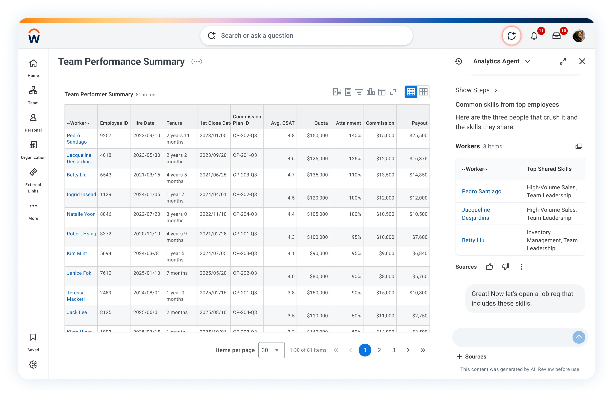

Analytic Reporting Agent
Improving productivity and efficiency with faster answers and better data-driven decisions
Product Design Leadership

Background & Context
Workday gives organizations a powerful platform for financial and workforce reporting—but for the finance business partners and HRBPs who depend on it most, the experience of actually getting to insight was slow, manual, and fragmented. Reports existed, but interpreting them required time-consuming exploration: scanning rows, cross-referencing fields, and piecing together a narrative from numbers that didn’t speak for themselves.
Finance BPs and HRBPs were spending their time on analysis mechanics instead of the decisions those mechanics were meant to support. Every step—finding the right report, interpreting the numbers, identifying what mattered, then building something with that knowledge—required either specialist help or significant manual effort. The insight and the work it should have triggered were disconnected by design.
- Time to value: The gap from question to useful answer—and from answer to follow-on action—was too large for the people who needed speed most.
- Time misallocated: High-effort work on “analysis mechanics” instead of on the business decisions the reports were built to support.
- Fractured flow: Every step (find the report, read the data, know what mattered, act) depended on deep expertise or heavy manual effort.
- Disconnected by design: Finding an insight and doing the work it implied lived in different tools, workflows, and handoffs.
Goals
Empower all users, regardless of technical expertise, to derive actionable insights using natural language from their reports and dashboards. The agent provides skills for conversational reporting through natural language, data exploration, visualization, drill down, and integration with Report authoring and Dashboard authoring copilot.
The Report Insights Agent was built to collapse that distance.
- Natural language on the report: People ask questions in plain language and receive cited, auditable answers—without working in the underlying data model.
- Narratives that do the first pass of analysis: Generated summaries surface what the data is already saying: trends, anomalies, and outliers that would often take an analyst pass to name.
- Conversational analysis: Follow-up questions let users compare periods, interrogate patterns across related reports, and pressure-test ideas the way they would with a strong analyst in the room.
- Close the loop agentically: When the insight needs action, people can have the agent scaffold a report, wire up a dashboard, or set up a visualization directly from the conversation—without a handoff, a context switch, or starting the workflow over.
My role
Product design & cross-functional leadership
- Collaborated with a team of three designers across the product surface.
- Partnered with product management on direction, scope, and delivery.
- Led competitive analysis to position the experience against the market and internal patterns.
- Worked cross-functionally with engineering, product, and research to align on guardrails, releases, and quality.
- Led design through a matrix relationship—including a dotted line to an additional designer—so patterns stayed consistent while teams moved in parallel.
Target User
Representative primary persona for this journey: a leader who needs a fast read on team performance, then room to go deeper or jump to the right place in the product—without re-learning where everything lives.
Persona
Manager
Works from a standard team performance report before recurring leadership touchpoints (e.g. weekly check-in).
Get a quick, executive-level summary of the team’s performance in time for a fast-moving leadership conversation—without reading every chart first.
User Journey 1
Compensation equity analysis
This flow shows how a manager uses a conversational agent to identify pay outliers and navigate to deep-dive reports without manually filtering complex compensation tables.
-
Initial prompt
From My Team’s Compensation Summary, the manager opens the conversational assistant and asks: “Who has the lowest compa-ratio?” The goal is to immediately surface equity concerns without scanning the entire 81-item list.
-
Summarization
The agent returns a ranked list of employees with the lowest compa-ratios (Marcus Severino, Brian Kaplan, etc.), providing the specific data points requested so the manager can instantly see who is furthest from their pay midpoint.
-
Dynamic parameter adjustment
To understand the broader context, the manager follows up: “I need to analyze the pay range for those employees.” The system understands the intent is to move from a summary level to a range analysis level for those specific individuals.
-
Redirection and navigation
Since the current report doesn’t contain the full range distribution data, the agent suggests the Pay Range Analysis report. When the user clicks the suggestion, it navigates to the new destination while maintaining the context of the inquiry.
-
Updated insight
The manager arrives at the Pay Range Analysis dashboard. The view is now focused on market midpoints and variance, allowing the leader to see exactly how much certain employees (like Dourant Gregory at 0.606) are lagging behind the market rate to inform salary adjustment decisions.
This end-to-end path highlights how managers move from compensation questions to equity-focused action quickly, with conversational guidance and report redirection preserving context.
User Journey 2
Data-driven talent acquisition
This flow demonstrates how a Staffing Director leverages unified data—combining external store performance from Snowflake with internal worker profiles—to identify the “DNA of success” and immediately trigger the hiring process for top-tier talent.
-
From traditional BI request to live data
From Team Performance Summary, the Staffing Director asks for top performers’ shared skills—first the slow path through BI (Snowflake + Workday stitched via ETL, access checks, latency). With Live Data Query, the same question becomes near-real-time and self-serve in the agent, removing that bottleneck.
-
Insight in conversation
The Analytics Agent returns a concise talent readout (e.g. Pedro, Jacqueline, Betty) and shared skills such as High-Volume Sales and Team Leadership. The director follows up: “Great! Now let’s open a job req that includes these skills.”
-
Handoff to recruiting
The agent surfaces Create Job Requisition; one click routes into Recruiting. The Staffing Director lands on the req screen with context preserved—from analyzing why hire to executing how, including region-scoped intent (e.g. Canada East).
Personas shift from BI-mediated to self-serve insight, then into transactional recruiting—with Live Data Query collapsing the middle mile.
Agent skills
These skills broaden what the reporting agent can do. They add cross-cutting capabilities across reporting that you can combine, so users are not limited to a single workflow.
The report authoring agent focuses on delivering a skill that provides both data source and field recommendations for our report authors.
Pain point: Data findability is a long-standing frustration for customers: report authors lose time discovering which sources and fields exist, and which ones actually fit the analysis they need to ship.
Goals: The report authoring skill addresses this through natural-language conversation—recommending relevant data sources and fields grounded in the report the customer is trying to build, so authors move from intent to a credible report structure faster.
Financial and workforce reports surface the numbers—but turning those numbers into a story still takes time. AI Narratives automatically converts report output into clear, actionable text summaries, so business users get the interpretation alongside the data.
Drill into report details, explore chart-level insights, and share findings directly to Google Docs or Slides—without ever leaving Workday. Less time decoding data, more time acting on it.
Conversational analysis keeps users in one thread as they refine intent: from a headline summary to a chart comparison, a filtered slice, or a follow-up “why” without re-orienting in menus.
The agent carries report context across turns so prompts stay grounded in the same dataset and filters—until you reset or pivot. When the ask exceeds analytics scope or needs a transactional workflow, the experience redirects instead of improvising.
Design approach
1. The Zero-State: “The Guided Entry”
A blank chat box is the enemy of usability. Users often don’t know the boundaries of what the agent can actually “see” or do.
Design pattern: Contextual onboarding. Instead of an empty input, provide starter chips that are relevant to the user’s specific role.
The UX fix: If an HR manager logs in, show chips like “Why is turnover high in the UK?” vs. a sales manager seeing “Who are my top 5 accounts at risk?”
- Mapped high-frequency decision journeys and prompted moments where users got stuck.
- Guided Prompting: Smart follow-up questions resolve ambiguity before analysis runs.
2. The Processing State: “Cognitive Transparency”
When a user asks a complex question, there is often a “black box” period where the AI is crunching data. If the user doesn’t see progress, they lose trust.
Design pattern: The thought trace. Show the agent’s reasoning in real time. Use small status indicators like: “Scanning Q3 Sales data… Filtering for Western Region… Correlating with Logistics delays.”
The UX fix: This builds trust by showing the math behind the answer, rather than only returning a number that might feel hallucinated.
- Established guardrails for metric reuse, prompt history, and governance-first defaults.
3. The Output: “Hybrid Visualizations”
The biggest mistake in conversational BI is returning only text or only a static image.
Design pattern: Interactive blocks. The output should be a live widget: users can hover over data points in the chat, change the chart type (for example bar to line), or filter a specific outlier directly within the conversational stream.
The UX fix: Ensure every chart includes a “How to read this” micro-summary. For example: “This chart shows a strong correlation (R² = 0.85) between tenure and promotion speed.”
- Trusted Insights Panel: Every answer includes source datasets, filters, and assumptions.
4. The “Loop”: The Follow-up Prompt
In data exploration, the first answer is rarely the final answer. The UX must facilitate a dialogue of discovery.
Design pattern: Socratic suggestions. After providing a result, the agent should proactively suggest the most logical next step.
Example: If the agent shows a dip in sales, the follow-up chips should be: “Show me this by Product Category” or “Is this related to the recent shipping strike?”
- Designed a conversational workflow that asks clarifying questions before generating outputs.
5. Closing the Loop: “Insight-to-Action”
Data is useless if it stays in the chat. The UX must provide a bridge back to the system of record.
Design pattern: The action bridge. Every insight should have a clear “What now?” control.
- Reusable Agent Flows: Saved agent sessions allow teams to operationalize repeated analyses.
- “Add to Executive Dashboard”
- “Email this to the Engineering Lead”
- “Open a Workday Case for this team”
Trust, grounding, and human-in-the-loop
Enterprise conversational analytics has to be accurate, permission-safe, and responsible. Our quality bar combined systematic evaluations (evals), hard guardrails, and safety testing so the agent does not invent data, bypass access controls, or expose what summaries should not repeat.
- Evals: NLQ, intent, schema mapping, and golden-dataset checks against human-verified baselines.
- Permissions: Answers inherit the user’s Workday security groups and DSPs—no elevation.
- Grounding: Numeric claims traced to query results; formatting and scope limits reduce hallucination risk.
- Safety & HITL: PII-aware summaries, injection red-teaming, bias review, thumbs feedback, and analyst hand-off.
Evaluations
We measured how reliably natural language turned into the right technical behavior and UI, using human-verified baselines where it mattered most.
- NLQ accuracy: Compared generated SQL or Prism queries (and their results) against a golden dataset of human-verified answers to score correctness, not just fluent text.
- Intent classification: Validated that the agent distinguishes when the user wants a chart, a summary, or a filtered list—so the surface matches the ask.
- Schema mapping: Checked informal language (e.g. “headcount”) maps to the correct technical fields in Workday data services (e.g. worker population metrics), reducing wrong joins or wrong measures.
- Response latency: Tracked prompt-to-render time so the experience stayed within conversational speed expectations, not batch-report latency.
Error states
When something cannot or should not complete, the experience fails visibly and safely instead of guessing.
- Scope limitation: Questions outside the analytics agent’s domain (e.g. general HR policy) are redirected or declined rather than answered speculatively.
- Formatting guardrails: Outputs stay in supported surfaces (e.g. approved chart types and narrative formats); users do not see raw query code or JSON blobs.
- Recovery paths: Clear messaging, retries, and escalation when queries cannot run or data is unavailable so users can adjust intent or route to an analyst.
Hallucinations
LLMs can sound confident with wrong numbers; we blocked that class of failure where possible.
- Grounding checks: Programmatic verification that numeric claims trace to executed query results; mismatches block or qualify the response rather than shipping invented figures.
- User-visible uncertainty: When confidence is limited, the UI surfaces limits and next steps instead of fabricating precision.
Source grounding
Every insight should be inspectable and constrained by what the organization already trusts.
- Security inheritance (zero-trust posture): The agent cannot “see” data the signed-in user cannot access in Workday; it inherits security groups and domain security policies (DSPs) rather than elevating privilege.
- Provenance: Answers tie back to datasets, fields, filters, and assumptions users can audit—aligned with the Trusted Insights Panel pattern in the product narrative.
Safety and responsible AI
Beyond correctness, we tested privacy, misuse, and fairness of automated summaries.
- PII and sensitive fields: Conversational summaries scrub or withhold categories of sensitive attributes (e.g. government IDs, private addresses) even when a power user could view them in a raw report context.
- Prompt injection: Red-teamed jailbreak-style prompts that attempt to override instructions or leak system prompts; mitigations and test cases folded into release gates.
- Bias and fairness: Reviewed workforce summaries for disparate emphasis or omission across demographics so “insights” language does not introduce new harm.
Feedback
Signals from builders and early users tightened boundaries before general availability.
- Thumbs up / down and qualitative notes: During testing, structured feedback highlighted failure modes (wrong intent, brittle mappings, unsafe wording) and prioritized fixes.
- Iteration loop: Eval suites and guardrail rules were updated as new scenarios emerged so regressions were caught in CI-style runs, not only in ad hoc demos.
Human in the loop
People remain authoritative for high-stakes decisions and edge cases.
- Analyst hand-off: One-click escalation packages prompts, context, and results so specialists can validate, refine queries, or complete work the agent should not own end-to-end.
- Override and audit: Users can reject or revise outputs, and organizations retain traceability for governance reviews.
Challenges
Shipping conversational reporting in an enterprise product surfaced tensions between accuracy, transparency, goal-directed flows, and users who explore in different ways.
- Data source constraints: Phase 1 used a curated golden dataset for accuracy and lower hallucination risk, but users hit silent edges—unsupported sources returned empty results with little explanation.
- Invisible capability boundaries: Chat hides what it can’t do until you ask; designing redirect-and-explain failures instead of dead ends was central.
- Trust in interpreted answers: Audit-sensitive finance users rarely trust AI summaries like self-found reports; calibrating visible reasoning without blanket uncertainty was ongoing.
- Loss of serendipitous discovery: Chat is goal-directed—users get only what they ask for, unlike browsing a report catalog for peripheral insight.
- Context drift across turns: Multi-turn memory helps until the model compounds a wrong assumption; recovery means debugging the thread, not just re-querying.
- Novice vs expert: Conversation rewards explorers but feels slower than direct navigation for experts; the UI needed explicit trade-offs for both.
Outcomes
Impact sits at the intersection of usefulness and trust: conversational speed, eval-backed quality, and governance-ready behavior. Key figures below come from usability testing and UX validation; broader commercial KPIs remain confidential.
- Quality bar: NLQ, intent, schema-mapping, and golden-dataset evals created a repeatable definition of “correct” that tracked releases and prevented regressions as prompts and models evolved.
- Latency fit: Monitoring prompt-to-visual latency kept the experience within conversational expectations rather than traditional batch-report wait times.
- Trust and compliance posture: Permission inheritance, hallucination checks, scope limits, PII-aware summaries, and injection testing aligned the agent with enterprise expectations before scaling to broader audiences.